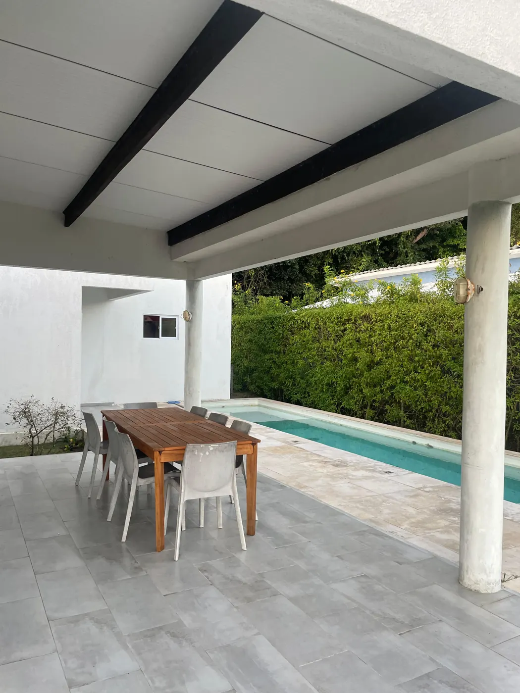

Casa Terracota
- Até 7 hóspedes
- 3 quartos (1 suíte)
- 2,5 banheiros
- Piscina
Arquitetura moderna com cobogós terracota, piscina privativa e varanda gourmet integrada à sala e à cozinha.
Ver a Casa Terracota
Três casas de temporada no Condomínio Pipa Natureza, entre a mata atlântica e a Praia do Madeiro. Reserve direto com o anfitrião, sem taxas de plataforma.
Consultar datasEscolha a casa ideal para sua viagem. Todas ficam lado a lado no mesmo condomínio — ótimo também para grupos grandes que queiram alugar mais de uma casa.
Arquitetura moderna com cobogós terracota, piscina privativa e varanda gourmet integrada à sala e à cozinha.
Ver a Casa Terracota
Casa moderna e colorida, com piscina, deck com espreguiçadeiras, churrasqueira e suíte com cama king.
Ver a Casa Frida
Três suítes independentes e piscina — perfeita para casais viajando juntos ou famílias que querem privacidade.
Ver a Casa AzulO Condomínio Pipa Natureza fica na Praia da Pipa, em Tibau do Sul (RN), cercado de verde e a poucos minutos de carro do centro de Pipa, com seus restaurantes, bares e lojinhas.


Tudo o que você precisa saber antes de reservar sua hospedagem em Pipa.
As três casas ficam no Condomínio Pipa Natureza (Quinta do Sol), na Praia da Pipa, município de Tibau do Sul, Rio Grande do Norte. O centro de Pipa fica a poucos minutos de carro e há uma trilha de cerca de 20 minutos até a Praia do Madeiro.
A reserva é feita direto com o anfitrião pelo WhatsApp: informe as datas e o número de hóspedes que respondemos com a disponibilidade e o valor. A reserva é formalizada com contrato de locação por temporada.
O check-in é a partir das 14h e o check-out até as 11h. Chegada antecipada ou saída tardia podem ser combinadas conforme a disponibilidade.
São cerca de 95 km (1h30 de carro) pela BR-101 Sul até Goianinha e depois em direção a Pipa. Também é possível contratar transfer no aeroporto — podemos indicar um motorista de confiança.
Sim, cada casa tem vaga para 1 carro, e é permitido estacionar na rua em frente à casa.
Sim. As casas são entregues limpas, com roupa de cama e banho, e a limpeza já está incluída no valor da diária.